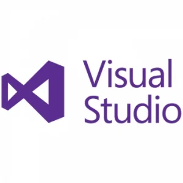

 A programming language is a system of notation for writing computer programs.[1]
Programming languages are described in terms of their syntax (form) and semantics (meaning), usually defined by a formal language.
Languages usually provide features such as a type system, variables, and mechanisms for error handling. An implementation of a programming language
is required in order to execute programs, namely an interpreter or a compiler.
This is an index to notable programming languages, in current or historical use.
Dialects of BASIC, esoteric programming languages, and markup languages are not included. A programming language does not need to be imperative or Turing-complete, but must be executable and so does not include markup languages such as HTML or XML, but does include domain-specific languages such as SQL and its dialects.